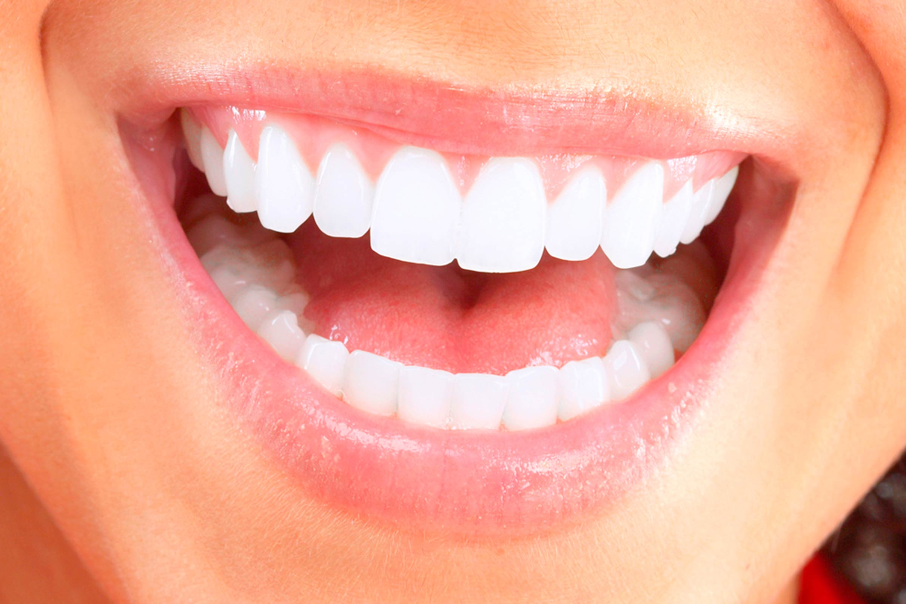
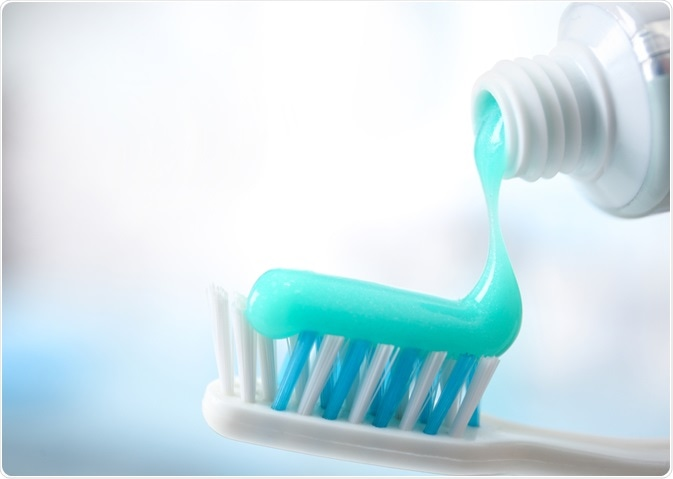

သွားကျဉ်တာတွေ ပျောက်ကင်းအောင်သွားကျဉ်တယ်ဆိုတာဟာ ပူတဲ့အစားသောက်တွေ၊ အေးတဲ့အစားသောက်တွေ၊ ချဉ်တဲ့အစားသောက်တွေ (အက်စစ်ဓါတ်ပါတဲ့အစားသောက်တွေ) စားသောက်တဲ့အခါ သွားအတွင်းထဲကနေ ပြင်းပြစူးရှတဲ့ နာကျင်မှုကို ရုတ်တရက် တဒင်္ဂ ခံစားရခြင်းဖြစ်ပါတယ်။ ဒီရုတ်တရက် တဒင်္ဂနာကျင်မှုဟာ အတော်လေးကို ပြင်းပြစူးရှတဲ့အတွက် အစားသောက်စားသောက်နေရင်း သင့်ပါးစပ်ကနေ “အိုး” ၊ “အား” စသဖြင့် အာမေဋိတ် အသံတွေတောင်ထွက်လာနိုင်ပါတယ်။ အပူ၊ အအေး၊ အချဉ်တွေစားသောက်တိုင်း ဒါမျိုးမကြာခဏဖြစ်နေတယ်ဆိုရင်တော့ သင့်သွားရဲ့ ကြွေလွှာတွေ ပျက်စီးနေတာ ဖြစ်နိုင်ခြေများပါပြီ။ ကျွန်တော်တို့ရဲ့ သွားတွေမှာ အလွှာ ၄ လွှာရှိပါတယ်။ |
|
|
လျှာအရောင်က ပြောတဲ့ သင့်ကျန်းမာရေးအခြေအနေလျှာဟာ အရိုးမရှိဘဲ ကြွက်သားတွေနဲ့ပဲ ဖွဲ့စည်းထားတဲ့ အင်္ဂါဖြစ်ပါတယ်။ လျှာဟာ အစားအသောက်တွေကို အရသာခံဖို့၊ စကားပြောဖို့အတွက် အရမ်းအရေးပါတဲ့ အင်္ဂါအစိတ်အပိုင်းဖြစ်ပြီး အစားအသောက်တွေကို ဝါးရာမျိုချရာမှာလည်း အထောက်အကူပြုပါတယ်။ ဒါ့အပြင် လျှာရဲ့အရောင်ပုံစံနဲ့အနေအထားကို ကြည့်ပြီး ခန္ဓာကိုယ်တွင်းမှာ ဘာတွေဖြစ်နေလဲဆိုတာကို သဲလွန်စကောက်နိုင်ပါသေးတယ်။ |
|  | သင့်သွားများကျန်းမာစေရန် ရှောင်ရမည့်အချက်များအသည်းကောင်းမှ ပွဲတောင်းနိုင်မယ် ဆိုသလို သွားကောင်းမှ အစားစားရာမှာ ကောင်းကောင်းစားနိုင်မှာပါ။ သွားနာတာ၊ သွားကိုက်တာကျင်တာ၊ နဲ့တာ၊ ပဲ့တာ စသဖြင့်ဖြစ်ပါက အစားအသောက်စားသောက်ရာမှ စားချင်သလောက် သက်တောင့်သက်တာ အရသာရှိရှိကောင်းကောင်းမစားနိုင်ဘဲ စားရသောက်ရခက်တာ ဝါးရခက်တာတွေ ဖြစ်နိုင်ပါတယ်။ ဒါကြောင့် အစားအသောက်စားသောက်ရာမှာ အရေးကြီးတဲ့သွားတွေကို မထိခိုက်အောင် ဘယ်အချက်တွေကို ရှောင်ရမလဲဆိုတာကို သိသလောက်ရေးသားတင်ပြချင်ပါတယ်။ |

|
အရမ်းခေတ်စားနေတဲ့oil pulling therapy အကြောင်း..ကျွန်မကိုယ်တိုင်လည်း night duty တွေနဲ့ဘာနဲ့ဆိုတော့ သွားသေချာမတိုက်ဖြစ်တဲ့ရက်တွေရှိတယ် .. ဟိုရက်ကမှ youtube ကြည့်ရင်းနဲ့ ဒီ oil pulling therapy အကြောင်းကိုအရမ်းစိတ်ဝင်စားတာနဲ့ သူငယ်ချင်းသွားဆရာဝန်ကိုပဲ မေးကြည့်ဖြစ်တယ်..– “ဆရာရဲရေ.. ခုခေတ်စားနေတဲ့ oil pulling therapy အကြောင်းမေးကြည့်ချင်လို့.. |

|
အပြုံးလေးတွေ ဖြူစင်ဝင်းလက်နေစေဖို့ဟိုရက်ကမှ သူငယ်ချင်းတွေဆုံတုန်း ရီစရာတွေပြောတော့မှ သူငယ်ချင်းထဲက သွားဆရာဝန်တစ်ယောက်ရဲ့ သွားလေးတွေ အရမ်းလှလို့ မေးကြည့်မိတယ်..– “ဆရာရဲရေ.. ဆရာရဲကတော့နော် Dentist လို့မပြောရဘူးသွားလေးတွေဖြူဖွေးနေတာပဲ treatment တွေယူထားတာလားဆရာရေ..” |
ခံတွင်းအနံ့ဆိုးမထွက်အောင် ဆောင်ရန် ရှောင်ရန်အချက်များသင်းပျံ့တဲ့ ခံတွင်းအနံ့ကို လူတိုင်းပိုင်ဆိုင်ချင်ကြပါတယ်။ သင်းပျံ့တဲ့ ခံတွင်းအနံ့မျိုးမပိုင်ဆိုင်ရရင်တောင်မှ အနံ့အသက်ဆိုးဝါးမှုကင်းတဲ့ ခံတွင်းနံ့မျိုးကိုပဲ လိုလားပိုင်ဆိုင်ချင်ကြပါတယ်။ ဘာလို့လဲဆိုတော့ ခံတွင်းအနံ့ဆိုးထွက်ခြင်းဟာ တခြားသူတွေနဲ့ ပြောဆိုဆက်ဆံတဲ့အခါမှာ တခြားသူတွေအတွက်လည်း စိတ်အနှောင့်အယှက်ဖြစ်စေနိုင်သလို မိမိကိုယ်တိုင်အတွက်လည်း မိမိကိုယ်မိမိယုံကြည်မှုကို လျော့ကျစေပြီး ပြောဆိုဆက်ဆံမှု မအောင်မြင်တာ လုပ်ငန်းအဆင်မပြေတာတွေအထိ ဖြစ်နိုင်လို့ပါ။ |
အိပ်နေတုန်း သွားမကြိတ်အောင် ဘယ်လိုလုပ်မလဲသွားကျိတ်တယ်ဆိုတာဟာ အပေါ်သွားတွေနဲ့အောက်သွားတွေကို တင်းတင်းဖိကြိတ်တာ(အပေါ်မေးရိုးနဲ့အောက်မေးရိုးကို တင်းတင်းဖိကြိတ်ပြီး လှုပ်ရှားတာ)မျိုးကိုဆိုလိုတာပါ။အံကျိတ်တယ်လို့လည်းခေါ်ကြပါတယ်။ဆေးပညာအရတော့ Bruxism လို့ခေါ်ပါတယ်။အများစုကသွားကျိတ်တာကို အိပ်တဲ့အချိန်မှာပဲ ဖြစ်တယ်လို့ထင်ကြပါတယ်။ဒါပေမယ့် လေ့လာချက်တွေအရ သွားကျိတ်ခြင်းဟာ နိုးနေတဲ့အချိန်တွေမှာလည်းဖြစ်ပါတယ်။ |
|  | ဘယ်လိုသွားတိုက်ဆေးမျိုး ရွေးရမလဲသွားတိုက်ဆေးအားလုံးဟာ သွားကျန်းမာရေးကောင်းအောင် ထိန်းသိမ်းပေးဖို့ စီမံဖော်စပ်ထားတယ်ဆိုတာကို အားလုံးသိထားကြပါတယ်။ ဒါပေမဲ့ လက်ရှိ သုံးနေတဲ့သွားတိုက်ဆေးဟာ သင့်အတွက် မှန်ကန်တဲ့သုံးစွဲမှု ဟုတ် မဟုတ်ဆိုတာကို သင်သိပါရဲ့လား။ တကယ်တော့ သွားတိုက်ဆေးအမျိုးအစားတွေဟာ သင့်သွားကျန်းမာရေး လိုအပ်ချက်အပေါ်မူတည်ပြီး ကွဲပြားမှုရှိပါတယ်။ |

|
ပါးစပ်ထဲမှာ ခါးခါးနေတာ ဘာလို့လဲလူတိုင်းလူတိုင်း ပါးစပ်အရသာမကောင်းတာ တခါတလေ ဖြစ်ဖူးကြမှာပါ။ ပါးစပ်အရသာမကောင်းဘူးဆိုတာ ပါးစပ်ထဲမှာ အခါးမစားထားဘဲနဲ့ ခါးနေတာ (Bitter Taste) သို့မဟုတ် သံအရသာလို သတ္ထုအရသာလိုမျိုးကြီး (Metallic Taste) ဖြစ်နေတာပါ။ |
??ခံတွင်းနဲ့ပတ်သတ်ပြီး ကျန်းမားရေးစစ်ဆေးမှု (Dental Check-Up) ၆လ၁ကြိမ်လုပ်ဖို့ ဘာကြောင့်လိုအပ်တာလဲ???ဖွံ့ဖြိုးဆဲနိုင်ငံတွေမှာနေထိုင်ရတဲ့ ကျွန်တော်တို့တတွေဟာ စားဝတ်နေရေးအတွက် အချိန်အများစုကိုပေးဆပ်ကာ လုံးပန်းနေရတဲ့အတွက် တကိုယ်ရေကျန်းမာရေးကိုဂရုစိုက်ဖို့မေ့နေကြတာများပါတယ် ။ ?သာမန်သွားကိုက်သွားနာတာက ဖြစ်လာမှသွားဆေးခန်းမှာပြလိုက်လို့ရပေမယ့် ခံတွင်းကင်ဆာလိုရောဂါဆိုးတွေအတွက်ကတော့ မဖြစ်ခင်ကတည်းကကြိုတင်ကာကွယ်ထားဖို့လိုအပ်တယ်ဗျ ။ |